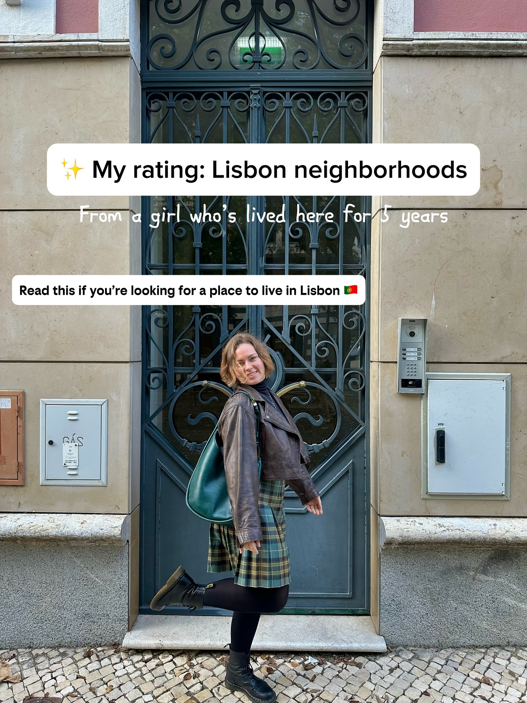
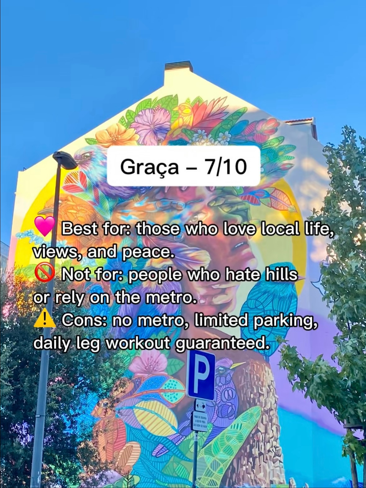
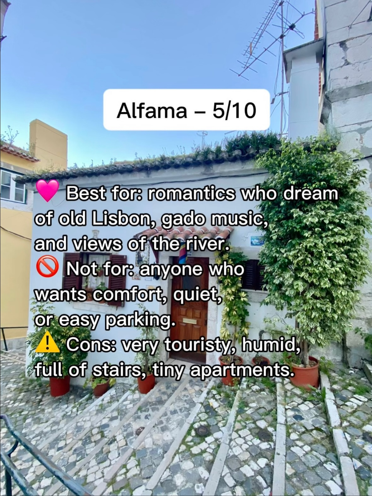
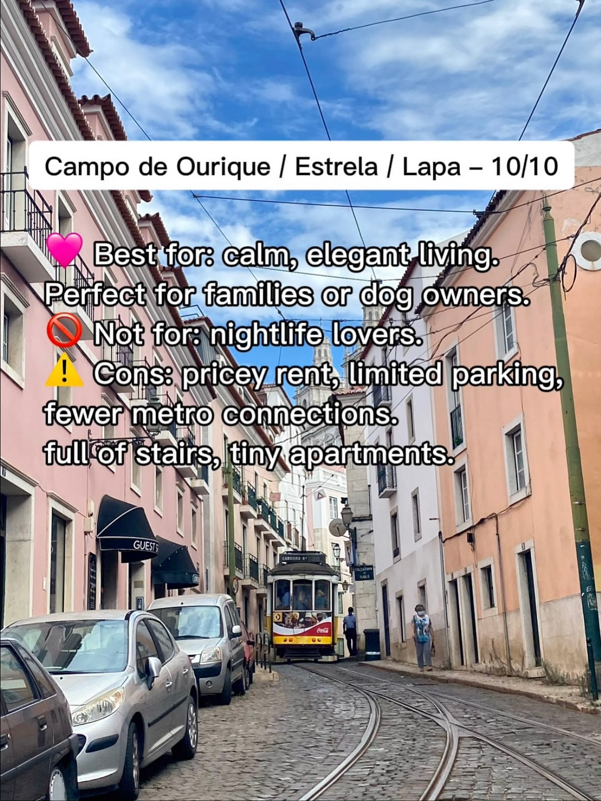
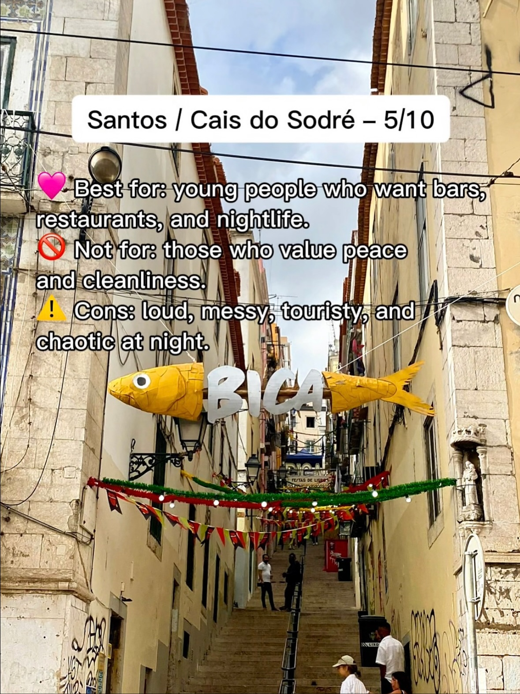
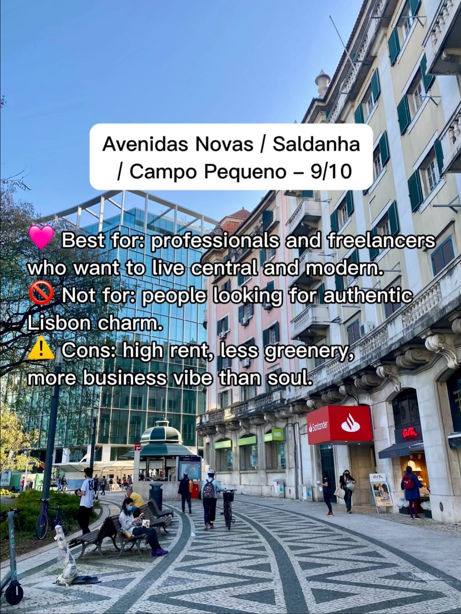
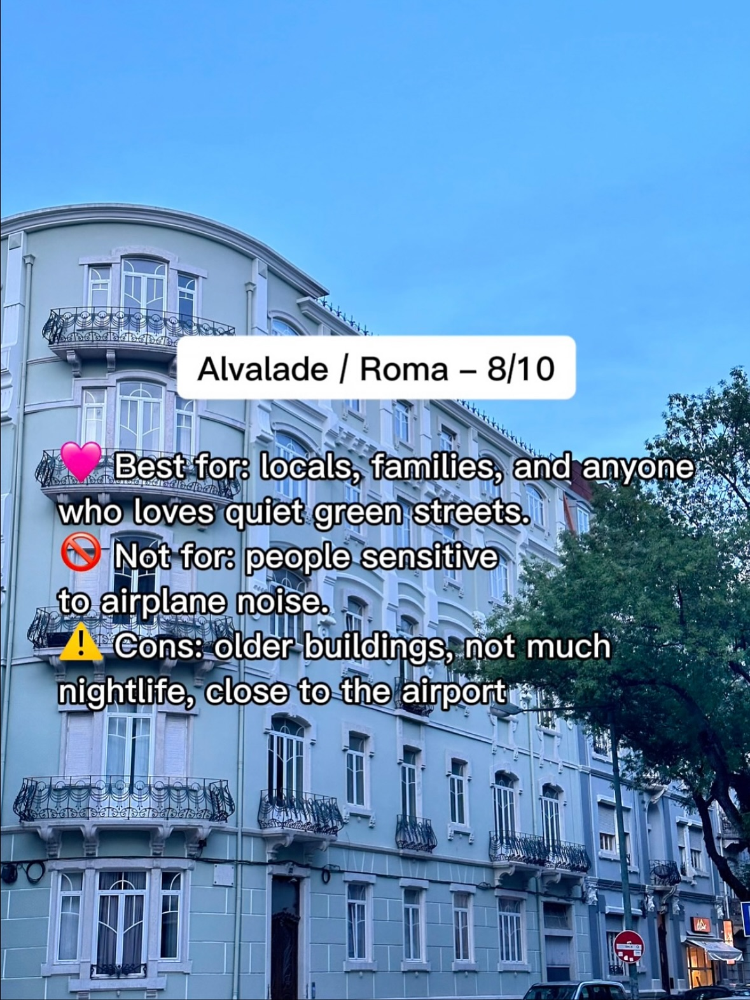
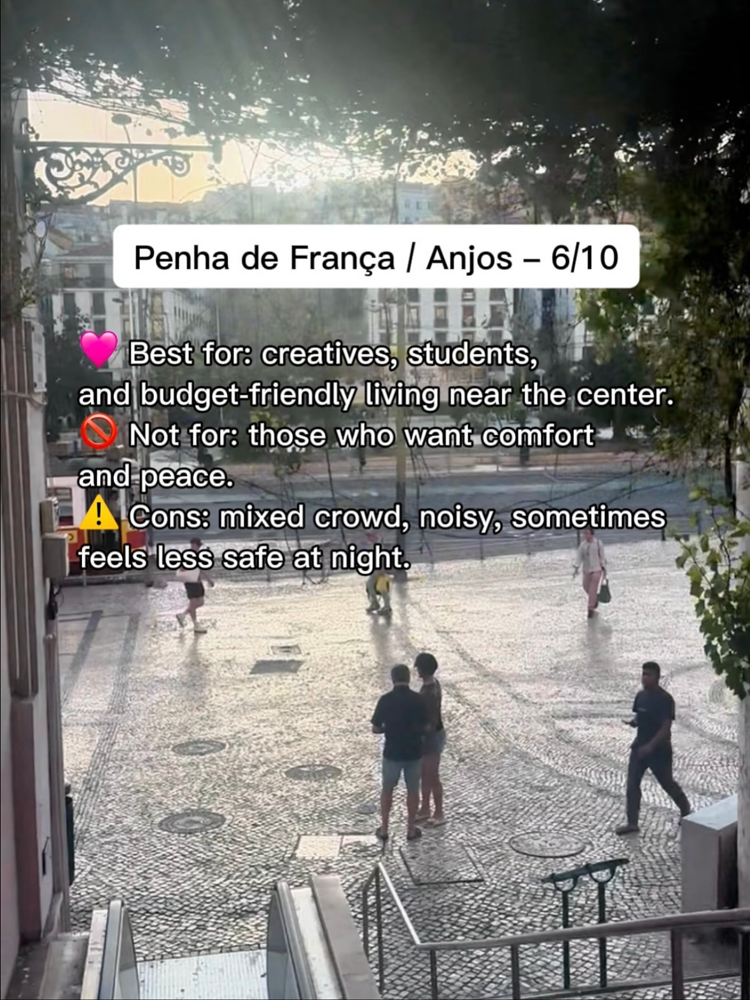
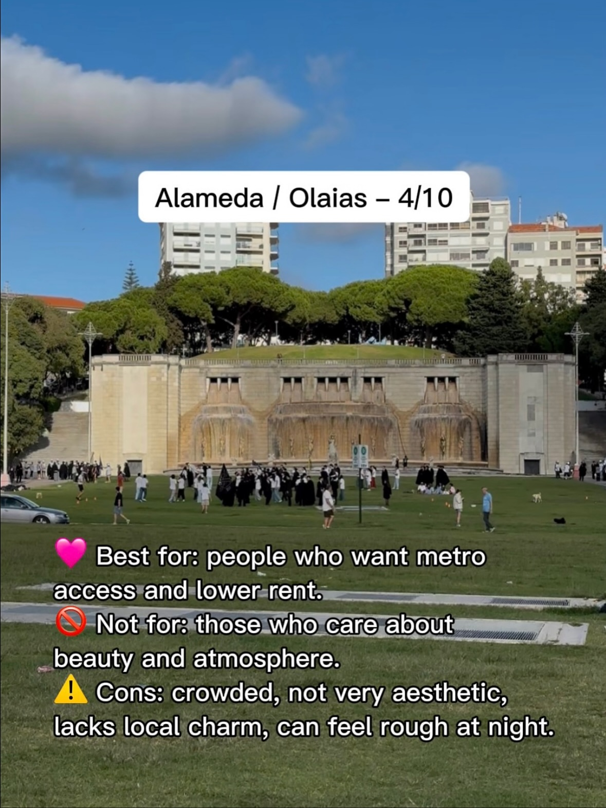

Instagram Post

✨ Where to live in Lisbon? My honest neighborhood...
carousel (10 slides) (enriched by ClaudeClaw)
Summary
✨ My rating: Lisbon neighborhoods From a girl who's lived... | Graça – 7/10 Best for: those who love local life, views, ... | Alfama – 5/10 Best for: romantics who dream of old Lis... | Campo de Ourique / Estrela / Lapa – 10/10 Best for: calm,... | Santos / Cais do Sodré – 5/10 💖 Best for: young people w... | Avenidas Novas / Saldanha / Campo Pequeno – 9/10 💖 Best ... | Alvalade / Roma – 8...
Caption
✨ Where to live in Lisbon? My honest neighborhood ratings after 5 years here.
Each area has its own vibe 😅
If you’re moving to Lisbon or just curious what life here really feels like - save this post 💌
Follow @gala_daily for honest Lisbon tips, life & local gems
#lisbonlife #expatlisbon #immigrant #lisbonneighborhoods #movingtoportugal #lisbonexpat #portugallife
1
✨ My rating: Lisbon neighborhoods From a girl who's lived here for 5 years Read this if you're looking for a place to live in Lisbon 🇵🇹
A smiling woman in a leather jacket and plaid skirt stands on a cobblestone sidewalk in front of an ornate dark door, with one leg lifted.
2
Graça – 7/10 Best for: those who love local life, views, and peace. Not for: people who hate hills or rely on the metro. Cons: no metro, limited parking, daily leg workout guaranteed.
A large, colorful mural depicting a woman's face surrounded by flowers and birds covers the side of a building under a clear blue sky, with a street light and a parking sign in the foreground.
3
Alfama – 5/10 Best for: romantics who dream of old Lisbon, gado music, and views of the river. 🚫 Not for: anyone who wants comfort, quiet, or easy parking. ⚠️ Cons: very touristy, humid, full of stairs, tiny apartments.
A narrow, cobbled street with stairs leads up to a white building adorned with green foliage and potted plants under a clear blue sky.
4
Campo de Ourique / Estrela / Lapa – 10/10 Best for: calm, elegant living. Perfect for families or dog owners. Not for: nightlife lovers. Cons: pricey rent, limited parking, fewer metro connections. full of stairs, tiny apartments.
A narrow, cobblestone street with tram tracks is lined with pastel-colored buildings and parked cars, with a yellow tram in the distance and people walking.
5
Santos / Cais do Sodré – 5/10 💖 Best for: young people who want bars, restaurants, and nightlife. 🚫 Not for: those who value peace and cleanliness. ⚠️ Cons: loud, messy, touristy, and chaotic at night. BICA
A narrow, steep street or alleyway in a city is shown, decorated with colorful banners and garlands, with a large yellow fish sculpture bearing the word "BICA" suspended overhead.
6
Avenidas Novas / Saldanha / Campo Pequeno – 9/10 💖 Best for: professionals and freelancers who want to live central and modern. 🚫 Not for: people looking for authentic Lisbon charm. ⚠️ Cons: high rent, less greenery, more business vibe than soul.
A city street with people walking and sitting on benches, bordered by a modern glass building and an older building with balconies and green shutters, under a clear blue sky.
7
Alvalade / Roma – 8/10 Best for: locals, families, and anyone who loves quiet green streets. Not for: people sensitive to airplane noise. Cons: older buildings, not much nightlife, close to the airport
A light blue multi-story building with balconies and many windows stands under a clear blue sky, with trees visible on the right and a street with cars and signs at the bottom.
8
Penha de França / Anjos – 6/10 💖 Best for: creatives, students, and budget-friendly living near the center. 🚫 Not for: those who want comfort and peace. ⚠️ Cons: mixed crowd, noisy, sometimes feels less safe at night.
An overhead view shows several people walking and standing on a patterned stone plaza, with trees and buildings in the background and an escalator or stairs in the foreground.
9
Alameda / Olaias – 4/10 Best for: people who want metro access and lower rent. Not for: those who care about beauty and atmosphere. Cons: crowded, not very aesthetic, lacks local charm, can feel rough at night.
A wide shot shows a large, multi-tiered concrete fountain with water flowing down, surrounded by a grassy park where many people are gathered, with apartment buildings and trees visible in the background under a blue sky.
10
Alcântara / Belém / Ajuda – 9/10 Best for: families, dog owners, and sunset lovers. Not for: people who need to be in the center fast. Cons: far from the metro, bus connections only, more tourists in summer.
An elevated view of a city shows traditional buildings with tiled roofs and green trees in the foreground, with a large suspension bridge spanning a body of water and modern buildings under a clear blue sky in the background.
All slides







